Security Module
The security module provides support for user authentication and authorization in a custom application. The module is built
upon the core framework and consists of a logon interface, change password interface, user management interface, role management interface
and a security manager implementation supporting authentication and authorization. The following sections document the management interfaces
and security manager component.
User Interface
This view allows a user to logon to the application.
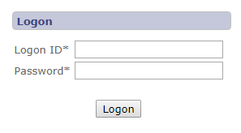
This view allows a user to change their password.
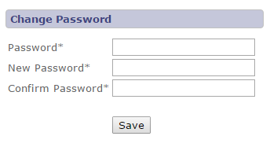
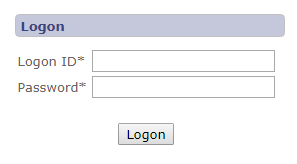
This view allows a user to change their password.
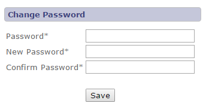
User Management Interface
This view allows a user to view, add, edit and delete user information.
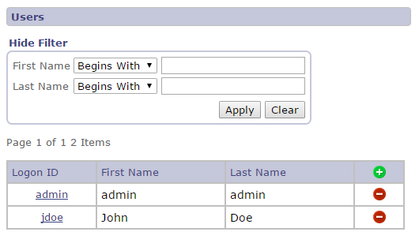
This view allows a user to add or edit a user information. Definitions of each field are listed below the screen shot.
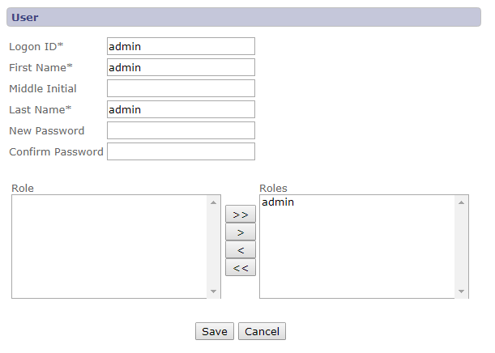
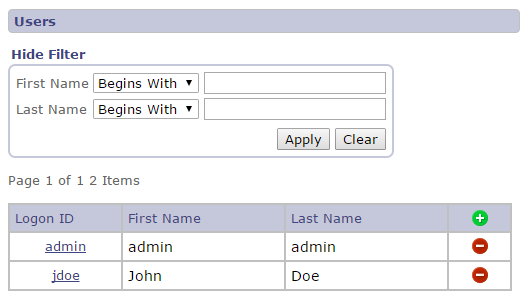
This view allows a user to add or edit a user information. Definitions of each field are listed below the screen shot.
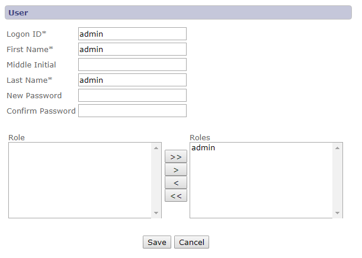
| Field | Description |
|---|---|
| Logon ID | Unique logon ID. |
| First Name | First name of user. |
| Middle Initial | Middle initial of user. |
| Last Name | Last name of user. |
| New Password | New password providing user authentication. |
| Confirm Password | Confirmation of value entered into New password field. |
| Roles | One or more selected roles providing task and field authorization. |
| Save | Saves changes to the user and returns to the view users page. |
| Cancel | Ignores changes to the user and returns to the view users page. |
Role Management Interface
This view allows a user to view, add, edit and delete role information.
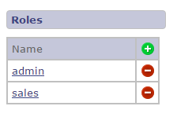
This view allows a user to add or edit a role information. Definitions of each field are listed below the screen shot.
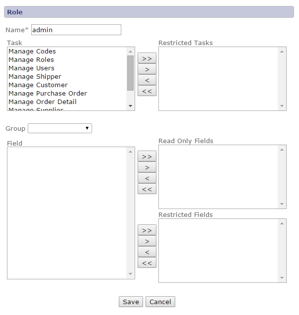
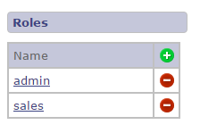
This view allows a user to add or edit a role information. Definitions of each field are listed below the screen shot.
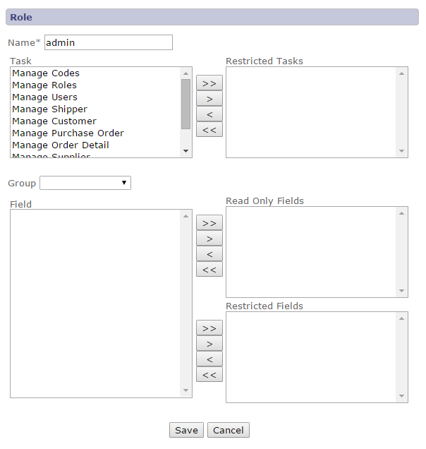
| Field | Description |
|---|---|
| Name | Unique role name. |
| Task | All tasks defined by the application. |
| Restricted Task | Tasks restricted for access by the role. |
| Group | List of field groupings providing access to fields available for authorization. |
| Field | All fields defined by the application and associated with the selected group. |
| Read Only Fields | Fields authorized with read only access. |
| Restricted Fields | Fields authorized with restricted access. |
| Save | Saves changes to the role and returns to the view roles page. |
| Cancel | Ignores changes to the role and returns to the view roles page. |
Security Manager Component
The security manager component provides authentication and authorization services to framework components based on the user and role
information defined using the user and role management interfaces. The security manager is enabled by specifying the fully qualified
security manager factory class name in the application defined "core.properties" file. The following excerpt provides an example of
the security manager factory configuration using the security manager provided by the security module.
# Security manager factory class name security.manager.factory=com.bws.jdistil.security.SecurityManagerFactory